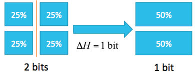
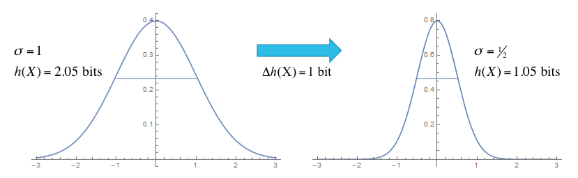

Calculating Entropy¶
Entropy is a measure of how much uncertainty is in the parameters. We can start with the simple case of a discrete parameter which can take on limited set of values. Using the formula for discrete entropy:
where \(x\) is the set of possible states of the parameter, we can examine a simple system with four states of equal probability:
Before the experiment, the entropy is \(-4 (1/4) \log_2(1/4) = 2\) bits. After the experiment, which eliminates the states on the right, only two states are remaining with an entropy of 1 bit. The difference in entropy before and after the experiment is the information gain, which is 1 bit in this case.
Extending this concept to continuous parameters, we use:
For a parameter which is normally distributed, \(x \sim N(\mu, \sigma)\), the entropy is:
Consider an experiment in which the parameter uncertainty \(\sigma\) is reduced from \(\sigma=1\) before the experiment to \(\sigma=\tfrac12\) after the experiment:
This experiment reduces the entropy from 2.05 bits to 1.05 bits, for an information gain of 1 bit.
For a multivariate normal \(N(\bar\mu, \Sigma)\), the entropy is
where \(n\) is the number of fitting parameters and \(\Sigma\) is the covariance matrix relating the parameters. For an uncorrelated system, this is proportional to \(\sum_{i=1}^n \log_2 \sigma_i\), with the individual parameter uncertainties \(\sigma_i\). In effect, the entropy is a measure of overall uncertainty resulting after the fit.
Within bumps, most models start with a uniform prior distribution for the parameters set using the x.range(low,high) or x.pm(delta) for some parameter x. Some models set the prior probability to a normal distribution using x.dev(sigma). Arbitrary prior probability distributions can be set using x.bounds = Distribution(D) where D is a distribution following the scipy.stats interface. The uncertainty on the data points does not directly enter into the entropy calculation. Instead, it has a direct influence on the calculation of the probability of seeing the data given the parameter, and so it influences the probability of the parameters after the fit. Increasing the error bars will increase the variance in the parameter estimation which will increase the entropy.
There are three ways that bumps can evaluate entropy. For the fitters which return a sample from the posterior distribution, such as DREAM, BUMPS can estimate the entropy directly from the sample. If the distribution is approximately normal, we can compute the covariance matrix from the sample and use the formula above for the multivariate normal. For the remaining fitters, we can use an estimate of the covariance matrix that results from the fit (Levenberg-Marquardt, BFGS), or we can compute the Hessian at the minimum (differential evolution, Nelder-Mead simplex). Again, this can be used in the formula above to give an estimate of the entropy.
We can use the difference in entropy between fits for experimental design. After setting up the model system, we can simulate a dataset using the expected statistics from the experiment, then fit the simulated data. This will give us the the expected uncertainty on our individual parameters, and the overall entropy. We can then play with different experimental parameters such as instrument configurations, sample variants and measurement time and select a combination which provides the most information about the parameters of interest. This can be done from the command line using --simulate, --noise and --entropy.
The information gain from the fit is not quite meaningful. We can calculate the prior entropy by looking at the fitting range of the parameters, and the particular choice of fitting ranges can alter the output of the fit. So for example, if we set the fitting range to eliminate solutions, we will have reduced the prior entropy as well as the posterior entropy, and likely decreased the number of bits of information gain. Conversely, if the fit converges to the same distribution regardless of the parameter range, we can drive the information gain to infinity by setting an unbounded input range.